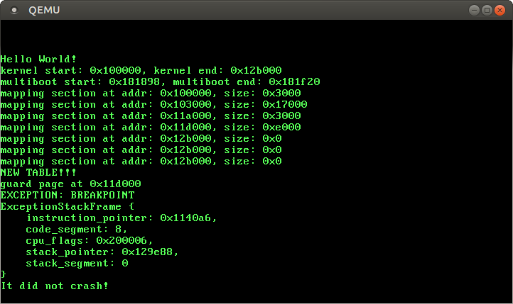

“Handling Exceptions with Naked Functions” : link 404'd
Handling Exceptions
No longer updated! You are viewing the a post of the first edition of “Writing an OS in Rust”, which is no longer updated. You can find the second edition here.
In this post, we start exploring CPU exceptions. Exceptions occur in various erroneous situations, for example when accessing an invalid memory address or when dividing by zero. To catch them, we have to set up an interrupt descriptor table that provides handler functions. At the end of this post, our kernel will be able to catch breakpoint exceptions and to resume normal execution afterwards.
As always, the complete source code is available on GitHub. Please file issues for any problems, questions, or improvement suggestions. There is also a comment section at the end of this page.
🔗Exceptions
An exception signals that something is wrong with the current instruction. For example, the CPU issues an exception if the current instruction tries to divide by 0. When an exception occurs, the CPU interrupts its current work and immediately calls a specific exception handler function, depending on the exception type.
We’ve already seen several types of exceptions in our kernel:
- Invalid Opcode: This exception occurs when the current instruction is invalid. For example, this exception occurred when we tried to use SSE instructions before enabling SSE. Without SSE, the CPU didn’t know the
movupsandmovapsinstructions, so it throws an exception when it stumbles over them. - Page Fault: A page fault occurs on illegal memory accesses. For example, if the current instruction tries to read from an unmapped page or tries to write to a read-only page.
- Double Fault: When an exception occurs, the CPU tries to call the corresponding handler function. If another exception occurs while calling the exception handler, the CPU raises a double fault exception. This exception also occurs when there is no handler function registered for an exception.
- Triple Fault: If an exception occurs while the CPU tries to call the double fault handler function, it issues a fatal triple fault. We can’t catch or handle a triple fault. Most processors react by resetting themselves and rebooting the operating system. This causes the bootloops we experienced in the previous posts.
For the full list of exceptions check out the OSDev wiki.
🔗The Interrupt Descriptor Table
In order to catch and handle exceptions, we have to set up a so-called Interrupt Descriptor Table (IDT). In this table we can specify a handler function for each CPU exception. The hardware uses this table directly, so we need to follow a predefined format. Each entry must have the following 16-byte structure:
| Type | Name | Description |
|---|---|---|
| u16 | Function Pointer [0:15] | The lower bits of the pointer to the handler function. |
| u16 | GDT selector | Selector of a code segment in the GDT. |
| u16 | Options | (see below) |
| u16 | Function Pointer [16:31] | The middle bits of the pointer to the handler function. |
| u32 | Function Pointer [32:63] | The remaining bits of the pointer to the handler function. |
| u32 | Reserved |
The options field has the following format:
| Bits | Name | Description |
|---|---|---|
| 0-2 | Interrupt Stack Table Index | 0: Don’t switch stacks, 1-7: Switch to the n-th stack in the Interrupt Stack Table when this handler is called. |
| 3-7 | Reserved | |
| 8 | 0: Interrupt Gate, 1: Trap Gate | If this bit is 0, interrupts are disabled when this handler is called. |
| 9-11 | must be one | |
| 12 | must be zero | |
| 13‑14 | Descriptor Privilege Level (DPL) | The minimal privilege level required for calling this handler. |
| 15 | Present |
Each exception has a predefined IDT index. For example the invalid opcode exception has table index 6 and the page fault exception has table index 14. Thus, the hardware can automatically load the corresponding IDT entry for each exception. The Exception Table in the OSDev wiki shows the IDT indexes of all exceptions in the “Vector nr.” column.
When an exception occurs, the CPU roughly does the following:
- Push some registers on the stack, including the instruction pointer and the RFLAGS register. (We will use these values later in this post.)
- Read the corresponding entry from the Interrupt Descriptor Table (IDT). For example, the CPU reads the 14-th entry when a page fault occurs.
- Check if the entry is present. Raise a double fault if not.
- Disable interrupts if the entry is an interrupt gate (bit 40 not set).
- Load the specified GDT selector into the CS segment.
- Jump to the specified handler function.
🔗An IDT Type
Instead of creating our own IDT type, we will use the Idt struct of the x86_64 crate, which looks like this:
#[repr(C)]
pub struct Idt {
pub divide_by_zero: IdtEntry<HandlerFunc>,
pub debug: IdtEntry<HandlerFunc>,
pub non_maskable_interrupt: IdtEntry<HandlerFunc>,
pub breakpoint: IdtEntry<HandlerFunc>,
pub overflow: IdtEntry<HandlerFunc>,
pub bound_range_exceeded: IdtEntry<HandlerFunc>,
pub invalid_opcode: IdtEntry<HandlerFunc>,
pub device_not_available: IdtEntry<HandlerFunc>,
pub double_fault: IdtEntry<HandlerFuncWithErrCode>,
pub invalid_tss: IdtEntry<HandlerFuncWithErrCode>,
pub segment_not_present: IdtEntry<HandlerFuncWithErrCode>,
pub stack_segment_fault: IdtEntry<HandlerFuncWithErrCode>,
pub general_protection_fault: IdtEntry<HandlerFuncWithErrCode>,
pub page_fault: IdtEntry<PageFaultHandlerFunc>,
pub x87_floating_point: IdtEntry<HandlerFunc>,
pub alignment_check: IdtEntry<HandlerFuncWithErrCode>,
pub machine_check: IdtEntry<HandlerFunc>,
pub simd_floating_point: IdtEntry<HandlerFunc>,
pub virtualization: IdtEntry<HandlerFunc>,
pub security_exception: IdtEntry<HandlerFuncWithErrCode>,
pub interrupts: [IdtEntry<HandlerFunc>; 224],
// some fields omitted
}
The fields have the type IdtEntry<F>, which is a struct that represents the fields of an IDT entry (see the table above). The type parameter F defines the expected handler function type. We see that some entries require a HandlerFunc and some entries require a HandlerFuncWithErrCode. The page fault even has its own special type: PageFaultHandlerFunc.
Let’s look at the HandlerFunc type first:
type HandlerFunc = extern "x86-interrupt" fn(_: &mut ExceptionStackFrame);
It’s a type alias for an extern "x86-interrupt" fn type. The extern keyword defines a function with a foreign calling convention and is often used to communicate with C code (extern "C" fn). But what is the x86-interrupt calling convention?
🔗The Interrupt Calling Convention
Exceptions are quite similar to function calls: The CPU jumps to the first instruction of the called function and executes it. Afterwards, if the function is not diverging, the CPU jumps to the return address and continues the execution of the parent function.
However, there is a major difference between exceptions and function calls: A function call is invoked voluntary by a compiler inserted call instruction, while an exception might occur at any instruction. In order to understand the consequences of this difference, we need to examine function calls in more detail.
Calling conventions specify the details of a function call. For example, they specify where function parameters are placed (e.g. in registers or on the stack) and how results are returned. On x86_64 Linux, the following rules apply for C functions (specified in the System V ABI):
- the first six integer arguments are passed in registers
rdi,rsi,rdx,rcx,r8,r9 - additional arguments are passed on the stack
- results are returned in
raxandrdx
Note that Rust does not follow the C ABI (in fact, there isn’t even a Rust ABI yet). So these rules apply only to functions declared as extern "C" fn.
🔗Preserved and Scratch Registers
The calling convention divides the registers in two parts: preserved and scratch registers.
The values of preserved registers must remain unchanged across function calls. So a called function (the “callee”) is only allowed to overwrite these registers if it restores their original values before returning. Therefore these registers are called “callee-saved”. A common pattern is to save these registers to the stack at the function’s beginning and restore them just before returning.
In contrast, a called function is allowed to overwrite scratch registers without restrictions. If the caller wants to preserve the value of a scratch register across a function call, it needs to backup and restore it before the function call (e.g. by pushing it to the stack). So the scratch registers are caller-saved.
On x86_64, the C calling convention specifies the following preserved and scratch registers:
| preserved registers | scratch registers |
|---|---|
rbp, rbx, rsp, r12, r13, r14, r15 | rax, rcx, rdx, rsi, rdi, r8, r9, r10, r11 |
| callee-saved | caller-saved |
The compiler knows these rules, so it generates the code accordingly. For example, most functions begin with a push rbp, which backups rbp on the stack (because it’s a callee-saved register).
🔗Preserving all Registers
In contrast to function calls, exceptions can occur on any instruction. In most cases we don’t even know at compile time if the generated code will cause an exception. For example, the compiler can’t know if an instruction causes a stack overflow or a page fault.
Since we don’t know when an exception occurs, we can’t backup any registers before. This means that we can’t use a calling convention that relies on caller-saved registers for exception handlers. Instead, we need a calling convention means that preserves all registers. The x86-interrupt calling convention is such a calling convention, so it guarantees that all register values are restored to their original values on function return.
🔗The Exception Stack Frame
On a normal function call (using the call instruction), the CPU pushes the return address before jumping to the target function. On function return (using the ret instruction), the CPU pops this return address and jumps to it. So the stack frame of a normal function call looks like this:

For exception and interrupt handlers, however, pushing a return address would not suffice, since interrupt handlers often run in a different context (stack pointer, CPU flags, etc.). Instead, the CPU performs the following steps when an interrupt occurs:
- Aligning the stack pointer: An interrupt can occur at any instructions, so the stack pointer can have any value, too. However, some CPU instructions (e.g. some SSE instructions) require that the stack pointer is aligned on a 16 byte boundary, therefore the CPU performs such an alignment right after the interrupt.
- Switching stacks (in some cases): A stack switch occurs when the CPU privilege level changes, for example when a CPU exception occurs in an user mode program. It is also possible to configure stack switches for specific interrupts using the so-called Interrupt Stack Table (described in the next post).
- Pushing the old stack pointer: The CPU pushes the values of the stack pointer (
rsp) and the stack segment (ss) registers at the time when the interrupt occurred (before the alignment). This makes it possible to restore the original stack pointer when returning from an interrupt handler. - Pushing and updating the
RFLAGSregister: TheRFLAGSregister contains various control and status bits. On interrupt entry, the CPU changes some bits and pushes the old value. - Pushing the instruction pointer: Before jumping to the interrupt handler function, the CPU pushes the instruction pointer (
rip) and the code segment (cs). This is comparable to the return address push of a normal function call. - Pushing an error code (for some exceptions): For some specific exceptions such as page faults, the CPU pushes an error code, which describes the cause of the exception.
- Invoking the interrupt handler: The CPU reads the address and the segment descriptor of the interrupt handler function from the corresponding field in the IDT. It then invokes this handler by loading the values into the
ripandcsregisters.
So the exception stack frame looks like this:

In the x86_64 crate, the exception stack frame is represented by the ExceptionStackFrame struct. It is passed to interrupt handlers as &mut and can be used to retrieve additional information about the exception’s cause. The struct contains no error code field, since only some few exceptions push an error code. These exceptions use the separate HandlerFuncWithErrCode function type, which has an additional error_code argument.
🔗Behind the Scenes
The x86-interrupt calling convention is a powerful abstraction that hides almost all of the messy details of the exception handling process. However, sometimes it’s useful to know what’s happening behind the curtain. Here is a short overview of the things that the x86-interrupt calling convention takes care of:
- Retrieving the arguments: Most calling conventions expect that the arguments are passed in registers. This is not possible for exception handlers, since we must not overwrite any register values before backing them up on the stack. Instead, the
x86-interruptcalling convention is aware that the arguments already lie on the stack at a specific offset. - Returning using
iretq: Since the exception stack frame completely differs from stack frames of normal function calls, we can’t return from handlers functions through the normalretinstruction. Instead, theiretqinstruction must be used. - Handling the error code: The error code, which is pushed for some exceptions, makes things much more complex. It changes the stack alignment (see the next point) and needs to be popped off the stack before returning. The
x86-interruptcalling convention handles all that complexity. However, it doesn’t know which handler function is used for which exception, so it needs to deduce that information from the number of function arguments. That means that the programmer is still responsible to use the correct function type for each exception. Luckily, theIdttype defined by thex86_64crate ensures that the correct function types are used. - Aligning the stack: There are some instructions (especially SSE instructions) that require a 16-byte stack alignment. The CPU ensures this alignment whenever an exception occurs, but for some exceptions it destroys it again later when it pushes an error code. The
x86-interruptcalling convention takes care of this by realigning the stack in this case.
If you are interested in more details: We also have a series of posts that explains exception handling using naked functions linked at the end of this post.
🔗Implementation
Now that we’ve understood the theory, it’s time to handle CPU exceptions in our kernel. We start by creating a new interrupts module:
// in src/lib.rs
...
mod interrupts;
...
In the new module, we create an init function, that creates a new Idt:
// in src/interrupts.rs
use x86_64::structures::idt::Idt;
pub fn init() {
let mut idt = Idt::new();
}
Now we can add handler functions. We start by adding a handler for the breakpoint exception. The breakpoint exception is the perfect exception to test exception handling. Its only purpose is to temporary pause a program when the breakpoint instruction int3 is executed.
The breakpoint exception is commonly used in debuggers: When the user sets a breakpoint, the debugger overwrites the corresponding instruction with the int3 instruction so that the CPU throws the breakpoint exception when it reaches that line. When the user wants to continue the program, the debugger replaces the int3 instruction with the original instruction again and continues the program. For more details, see the “How debuggers work” series.
For our use case, we don’t need to overwrite any instructions (it wouldn’t even be possible since we set the page table flags to read-only). Instead, we just want to print a message when the breakpoint instruction is executed and then continue the program.
So let’s create a simple breakpoint_handler function and add it to our IDT:
/// in src/interrupts.rs
use x86_64::structures::idt::ExceptionStackFrame;
pub fn init() {
let mut idt = Idt::new();
idt.breakpoint.set_handler_fn(breakpoint_handler);
}
extern "x86-interrupt" fn breakpoint_handler(
stack_frame: &mut ExceptionStackFrame)
{
println!("EXCEPTION: BREAKPOINT\n{:#?}", stack_frame);
}
Our handler just outputs a message and pretty-prints the exception stack frame.
When we try to compile it, the following error occurs:
error: x86-interrupt ABI is experimental and subject to change (see issue #40180)
--> src/interrupts.rs:8:1
|
8 | extern "x86-interrupt" fn breakpoint_handler(
| _^ starting here...
9 | | stack_frame: &mut ExceptionStackFrame)
10 | | {
11 | | println!("EXCEPTION: BREAKPOINT\n{:#?}", stack_frame);
12 | | }
| |_^ ...ending here
|
= help: add #![feature(abi_x86_interrupt)] to the crate attributes to enable
This error occurs because the x86-interrupt calling convention is still unstable. To use it anyway, we have to explicitly enable it by adding #![feature(abi_x86_interrupt)] on the top of our lib.rs.
🔗Loading the IDT
In order that the CPU uses our new interrupt descriptor table, we need to load it using the lidt instruction. The Idt struct of the x86_64 provides a load method function for that. Let’s try to use it:
pub fn init() {
let mut idt = Idt::new();
idt.breakpoint.set_handler_fn(breakpoint_handler);
idt.load();
}
When we try to compile it now, the following error occurs:
error: `idt` does not live long enough
--> src/interrupts/mod.rs:43:5
|
43 | idt.load();
| ^^^ does not live long enough
44 | }
| - borrowed value only lives until here
|
= note: borrowed value must be valid for the static lifetime...
So the load methods expects a &'static self, that is a reference that is valid for the complete runtime of the program. The reason is that the CPU will access this table on every interrupt until we load a different IDT. So using a shorter lifetime than 'static could lead to use-after-free bugs.
In fact, this is exactly what happens here. Our idt is created on the stack, so it is only valid inside the init function. Afterwards the stack memory is reused for other functions, so the CPU would interpret random stack memory as IDT. Luckily, the Idt::load method encodes this lifetime requirement in its function definition, so that the Rust compiler is able to prevent this possible bug at compile time.
In order to fix this problem, we need to store our idt at a place where it has a 'static lifetime. To achieve this, we could either allocate our IDT on the heap using Box and then convert it to a 'static reference or we can store the IDT as a static. Let’s try the latter:
static IDT: Idt = Idt::new();
pub fn init() {
IDT.breakpoint.set_handler_fn(breakpoint_handler);
IDT.load();
}
There are two problems with this. First, statics are immutable, so we can’t modify the breakpoint entry from our init function. Second, the Idt::new function is not a const function, so it can’t be used to initialize a static. We could solve this problem by using a static mut of type Option<Idt>:
static mut IDT: Option<Idt> = None;
pub fn init() {
unsafe {
let IDT = Some(Idt::new());
let idt = IDT.as_mut_ref().unwrap();
idt.breakpoint.set_handler_fn(breakpoint_handler);
idt.load();
}
}
This variant compiles without errors but it’s far from idiomatic. static muts are very prone to data races, so we need an unsafe block on each access. Also, we need to explicitly unwrap the IDT on each use, since might be None.
🔗Lazy Statics to the Rescue
The one-time initialization of statics with non-const functions is a common problem in Rust. Fortunately, there already exists a good solution in a crate named lazy_static. This crate provides a lazy_static! macro that defines a lazily initialized static. Instead of computing its value at compile time, the static laziliy initializes itself when it’s accessed the first time. Thus, the initialization happens at runtime so that arbitrarily complex initialization code is possible.
Let’s add the lazy_static crate to our project:
// in src/lib.rs
#[macro_use]
extern crate lazy_static;
# in Cargo.toml
[dependencies.lazy_static]
version = "0.2.4"
features = ["spin_no_std"]
We need the spin_no_std feature, since we don’t link the standard library. We also need the #[macro_use] attribute on the extern crate line to import the lazy_static! macro.
Now we can create our static IDT using lazy_static:
lazy_static! {
static ref IDT: Idt = {
let mut idt = Idt::new();
idt.breakpoint.set_handler_fn(breakpoint_handler);
idt
};
}
pub fn init() {
IDT.load();
}
Note how this solution requires no unsafe blocks or unwrap calls.
🔗Aside: How does the
lazy_static!macro work?The macro generates a
staticof typeOnce<Idt>. TheOncetype is provided by thespincrate and allows deferred one-time initialization. It is implemented using anAtomicUsizefor synchronization and anUnsafeCellfor storing the (possibly uninitialized) value. So this solution also usesunsafebehind the scenes, but it is abstracted away in a safe interface.
🔗Testing it
Now we should be able to handle breakpoint exceptions! Let’s try it in our rust_main:
// in src/lib.rs
pub extern "C" fn rust_main(...) {
...
memory::init(boot_info);
// initialize our IDT
interrupts::init();
// invoke a breakpoint exception
x86_64::instructions::interrupts::int3();
println!("It did not crash!");
loop {}
}
When we run it in QEMU now (using make run), we see the following:

It works! The CPU successfully invokes our breakpoint handler, which prints the message, and then returns back to the rust_main function, where the It did not crash! message is printed.
Aside: If it doesn’t work and a boot loop occurs, this might be caused by a kernel stack overflow. Try increasing the stack size to at least 16kB (4096 * 4 bytes) in the
boot.asmfile.
We see that the exception stack frame tells us the instruction and stack pointers at the time when the exception occurred. This information is very useful when debugging unexpected exceptions. For example, we can look at the corresponding assembly line using objdump:
> objdump -d build/kernel-x86_64.bin | grep -B5 "1140a6:"
00000000001140a0 <x86_64::instructions::interrupts::int3::h015bf61815bb8afe>:
1140a0: 55 push %rbp
1140a1: 48 89 e5 mov %rsp,%rbp
1140a4: 50 push %rax
1140a5: cc int3
1140a6: 48 83 c4 08 add $0x8,%rsp
The -d flags disassembles the code section and -C flag makes function names more readable by demangling them. The -B flag of grep specifies the number of preceding lines that should be shown (5 in our case).
We clearly see the int3 exception that caused the breakpoint exception at address 1140a5. Wait… the stored instruction pointer was 1140a6, which is a normal add operation. What’s happening here?
🔗Faults, Aborts, and Traps
The answer is that the stored instruction pointer only points to the causing instruction for fault type exceptions, but not for trap or abort type exceptions. The difference between these types is the following:
- Faults are exceptions that can be corrected so that the program can continue as if nothing happened. An example is the page fault, which can often be resolved by loading the accessed page from the disk into memory.
- Aborts are fatal exceptions that can’t be recovered. Examples are machine check exception or the double fault.
- Traps are only reported to the kernel, but don’t hinder the continuation of the program. Examples are the breakpoint exception and the overflow exception.
The reason for the diffent instruction pointer values is that the stored value is also the return address. So for faults, the instruction that caused the exception is restarted and might cause the same exception again if it’s not resolved. This would not make much sense for traps, since invoking the breakpoint exception again would just cause another breakpoint exception1. Thus the instruction pointer points to the next instruction for these exceptions.
In some cases, the distinction between faults and traps is vague. For example, the debug exception behaves like a fault in some cases, but like a trap in others. So to find out the meaning of the saved instruction pointer, it is a good idea to read the official documentation for the exception, which can be found in the AMD64 manual in Section 8.2. For example, for the breakpoint exception it says:
#BPis a trap-type exception. The saved instruction pointer points to the byte after theINT3instruction.
The documentation of the Idt struct and the OSDev Wiki also contain this information.
🔗Too much Magic?
The x86-interrupt calling convention and the Idt type made the exception handling process relatively straightforward and painless. If this was too much magic for you and you like to learn all the gory details of exception handling, we got you covered: Our “Handling Exceptions with Naked Functions” series shows how to handle exceptions without the x86-interrupt calling convention and also creates its own Idt type. Historically, these posts were the main exception handling posts before the x86-interrupt calling convention and the x86_64 crate existed.
🔗What’s next?
We’ve successfully caught our first exception and returned from it! The next step is to add handlers for other common exceptions such as page faults. We also need to make sure that we never cause a triple fault, since it causes a complete system reset. The next post explains how we can avoid this by correctly catching double faults.
🔗Footnotes
1
There are valid use cases for restarting an instruction that caused a breakpoint. The most common use case is a debugger: When setting a breakpoint on some code line, the debugger overwrites the corresponding instruction with an int3 instruction, so that the CPU traps when that line is executed. When the user continues execution, the debugger swaps in the original instruction and continues the program from the replaced instruction.
error[E0425]: cannot find function `int3` in module `x86_64::instructions::interrupts`
--> src/lib.rs:55:39
|
55 | x86_64::instructions::interrupts::int3();
| ^^^^ not found in `x86_64::instructions::interrupts`
I am using x86_64 v0.1.0. I looked in both x86_64 and x86 crates.io documentation. There is no such function as int3() in them. May be they stopped support in the newer versions?
Sorry, I completely forgot to push my latest x86_64 updates to crates.io. It's in x86_64 0.1.2 now, so it should work after a `cargo update`.
Thanks. That solved it.